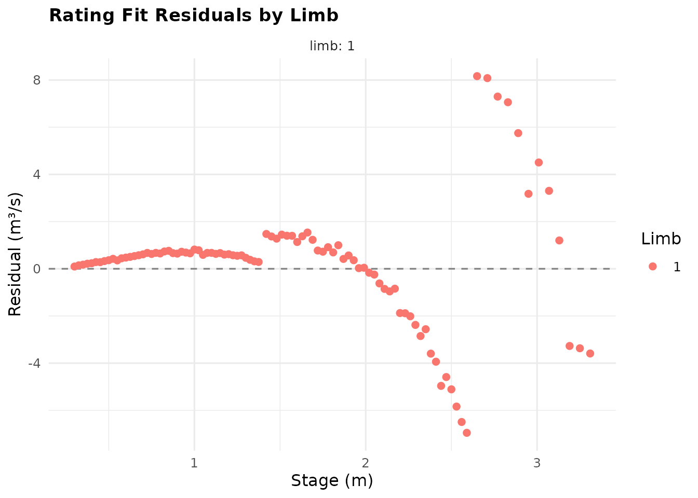
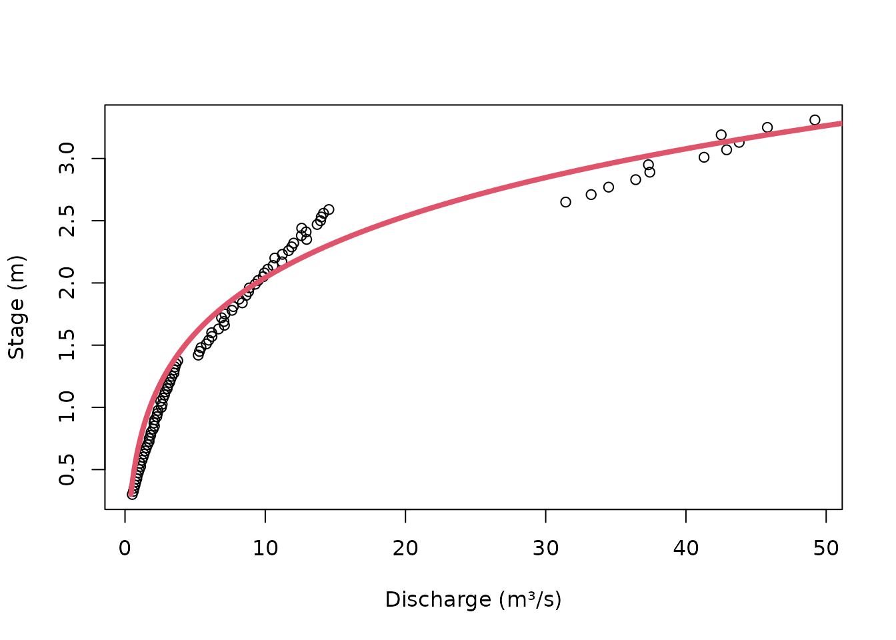
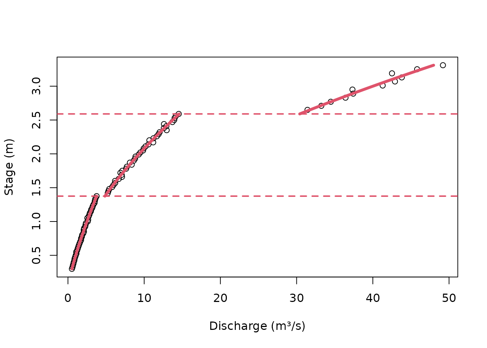
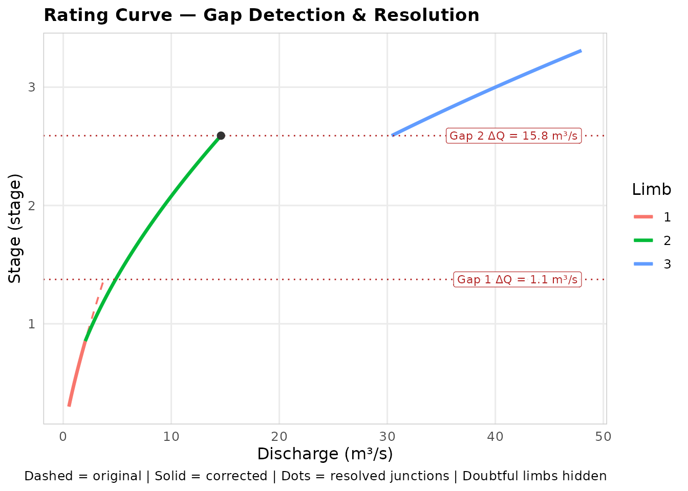
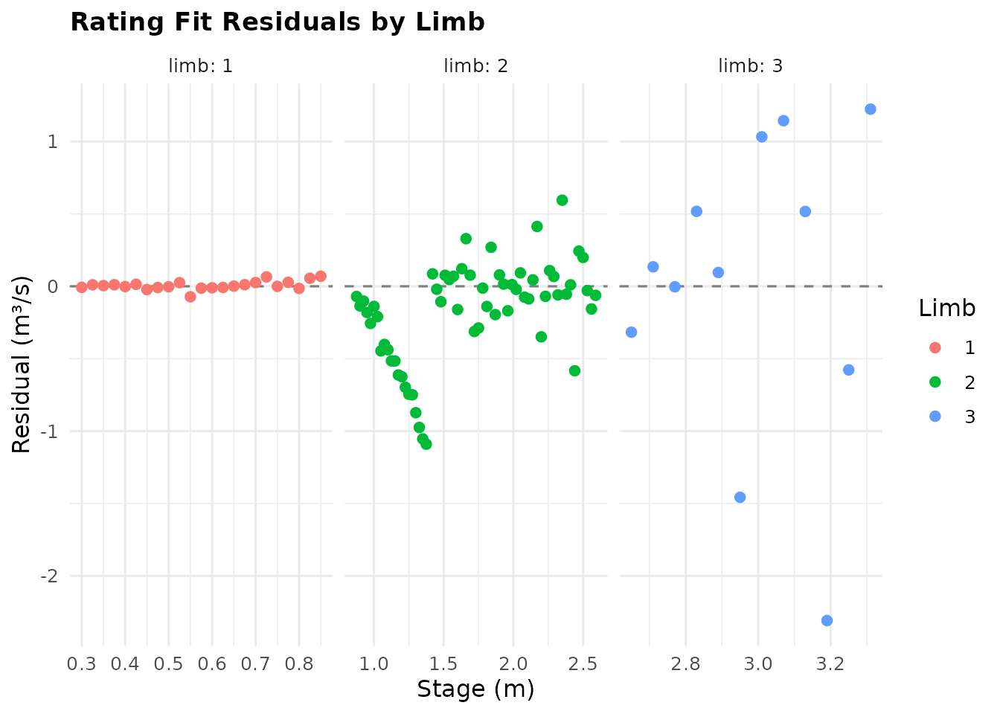

A Rating Curve Walkthrough: From Spot Gaugings to a Constrained Curve
Jonathan Payne, Environment Agency Flood Forecasting
August 2026
Source:vignettes/rating_curve_walkthrough.Rmd
rating_curve_walkthrough.RmdWhat this vignette is
vignette("rating_curves_guide") is the
theory-and-reference guide, and
vignette("non_standard_optimisation") explains when and why
to reach for non-default fitting. Neither tells one continuous story.
This one does: a single station, one running set of gaugings, taken from
“we have some spot gaugings” all the way through to a rating a
forecaster could actually trust at the top end. It deliberately covers a
narrower path than
system.file("examples", "walkthrough.R", package = "reach.rate"),
which tours every function in the package – this instead follows one
decision at a time, in the order you would actually make them: fit
something, notice it’s wrong, work out why, and fix it.
The gaugings
Real stations don’t arrive with breakpoints attached – someone has been out with a current meter or an ADCP on however many occasions the programme allowed, and the job is to work out what curve, or curves, that scatter of points implies. This station has three genuine physical regimes (a low-flow section control, a mid-flow channel control, and a high-flow regime where the floodplain starts to convey water), though we won’t pretend to know that yet. True to how real programmes work, the high-flow gaugings are the sparsest – big floods are rare and hard to gauge safely, so there are far fewer of them.
set.seed(77)
stage_lo <- seq(0.3, 1.39, by = 0.025)
stage_mid <- seq(1.42, 2.59, by = 0.03)
stage_hi <- seq(2.65, 3.35, by = 0.06)
stage_m <- c(stage_lo, stage_mid, stage_hi)
true_C <- c(2.5, 3.5, 6.0); true_a <- c(0, 0.15, 0.2); true_n <- c(1.3, 1.6, 1.85)
discharge_true <- c(
true_C[1] * (stage_lo - true_a[1])^true_n[1],
true_C[2] * (stage_mid - true_a[2])^true_n[2],
true_C[3] * (stage_hi - true_a[3])^true_n[3]
)
discharge_cms <- discharge_true * exp(rnorm(length(stage_m), sd = 0.02))
length(stage_m)
#> [1] 96
range(stage_m)
#> [1] 0.30 3.31true_C/true_a/true_n are shown
here only so this vignette can check its own working later; a real
analyst has the gaugings and nothing else. Ninety-six gaugings, stage
0.3 to 3.31 m, 2% proportional noise – plausible current-meter accuracy
(Herschy 2009).
A single curve, and why it’s wrong
The obvious first move: one power law across the whole range.
fit_single <- rate_optimise(discharge_cms, stage_m)
fit_single@limbs[, .(C, a, n, rmse_cms, r_squared)]
#> C a n rmse_cms r_squared
#> <num> <num> <num> <num> <num>
#> 1: 8.187914e-05 -2.917098 7.313943 2.583892 0.9543053r_squared above 0.95 looks respectable at a glance – and
that is exactly the trap. Look at what it took to get there:
n near 7, a pinned near -2.9. No open-channel
control on earth produces an exponent of 7 (Herschy 2009 and Rantz et
al. 1982 both put every common control between about 1.3 and 2.5), and a
zero-flow datum almost 3 m below the lowest gauged stage is not a real
hydraulic feature – it is the optimiser bending an implausible shape to
paper over a curvature the data actually has. r_squared
alone would have let this through:
plot_rating_residuals(fit_single)
The residuals are not noise – they swing from strongly positive at
low stage to negative in the middle and positive again at the top, the
textbook signature of forcing one power law onto more than one physical
regime. rating_plot() shows the same thing as a curve
rather than a residual:
rating_plot(fit_single)
Where do the limbs split?
Guessing breakpoints by eye is one option;
suggest_breakpoints() is a less subjective one. It fits a
two-limb model at every candidate stage, scores each by AIC against the
current best (so it charges for the extra parameters, not just rewards a
lower RSS), and greedily keeps whichever clears both the AIC test and a
minimum RSS improvement.
candidates_dt <- suggest_breakpoints(discharge_cms, stage_m, max_breaks = 2L)
candidates_dt[fit_status == "ok"]
#> candidate_stage score improvement n_obs_lower n_obs_upper fit_status
#> <num> <num> <num> <int> <int> <char>
#> 1: 2.590 325.30506 0.9682891 84 12 ok
#> 2: 2.560 255.11902 0.9341246 83 13 ok
#> 3: 2.530 182.47311 0.8596002 82 14 ok
#> 4: 2.500 145.98939 0.7946877 81 15 ok
#> 5: 2.470 121.80453 0.7358656 80 16 ok
#> ---
#> 160: 1.250 -74.39940 -1.0390698 39 45 ok
#> 161: 1.275 -75.69474 -1.0667697 40 44 ok
#> 162: 1.300 -78.27991 -1.1231816 41 43 ok
#> 163: 1.325 -81.93574 -1.2055949 42 42 ok
#> 164: 1.930 -97.37556 -1.5904425 62 22 ok
#> round rank
#> <int> <int>
#> 1: 1 8
#> 2: 1 9
#> 3: 1 10
#> 4: 1 11
#> 5: 1 12
#> ---
#> 160: 2 82
#> 161: 2 83
#> 162: 2 84
#> 163: 2 85
#> 164: 2 86
breaks <- suggested_breakpoints_vector(candidates_dt)
breaks
#> [1] 1.375 2.5901.375 and 2.59 – close enough to the station’s real transitions
(which, recall, we are not supposed to know yet) that this is a
reasonable breakpoint set to fit on. suggest_breakpoints()
narrows the search; it does not replace walking the reach and checking
these against an actual berm, bank top, or control feature.
Fitting the multi-limb rating
fit_multi <- rate_optimise(discharge_cms, stage_m, control = breaks)
fit_multi@limbs[, .(limb, lower_stage_m, upper_stage_m, C, a, n, rmse_cms, r_squared, n_obs)]
#> limb lower_stage_m upper_stage_m C a n rmse_cms
#> <int> <num> <num> <num> <num> <num> <num>
#> 1: 1 0.300 1.375 2.530214 0.009671352 1.272510 0.04065298
#> 2: 2 1.375 2.590 3.264323 0.102560115 1.643885 0.20612587
#> 3: 3 2.590 3.310 7.333538 0.268231353 1.688375 1.01350296
#> r_squared n_obs
#> <num> <int>
#> 1: 0.9982203 44
#> 2: 0.9946439 40
#> 3: 0.9619503 12Night and day next to the single curve. Limb 1’s
rmse_cms alone dropped by two orders of magnitude, and
every a/n pair now sits in a range an engineer
could actually defend (compare against
true_a/true_n above – limbs 1 and 2, both
well-gauged, land close to the values that generated them; limb 3,
gauged only twelve times, is close but visibly less certain, which is
exactly what thin evidence should look like).
rating_plot(fit_multi)
Checking the junctions
Three limbs fitted independently rarely meet exactly where they join – each limb only ever sees its own gaugings, so nothing forces continuity at the breakpoints.
rating_table <- as_rating_table(fit_multi)
rc_raw_dt <- expand_rating_table(rating_table, step = 0.01)
gaps_dt <- detect_rc_gaps(rc_raw_dt)
#> INFO [2026-09-01 09:53:38] Checked 2 junction(s): 2 gap(s) flagged.
gaps_dt[, .(junction, stage_break, q_lower_end, q_upper_start, gap_abs, gap_rel, gap_flagged)]
#> junction stage_break q_lower_end q_upper_start gap_abs gap_rel
#> <int> <num> <num> <num> <num> <num>
#> 1: 1 1.375 3.760521 4.850705 1.090184 0.2899024
#> 2: 2 2.590 14.600410 30.405566 15.805156 1.0825145
#> gap_flagged
#> <lgcl>
#> 1: TRUE
#> 2: TRUEBoth junctions are flagged – a 29% jump at 1.375 m, and a much larger 108% jump at 2.59 m where the thinly-gauged top limb meets limb 2. A hydrograph crossing either stage today would see discharge lurch sideways, an artefact of how the limbs were fitted, not anything the river actually does.
Closing them: align_limb_boundaries()
Rather than patch the discretised table,
align_limb_boundaries() works on the equations directly: it
looks for the stage at which two adjacent limbs’ fitted curves genuinely
cross, and moves the shared boundary there – no rescaling, no changed
coefficients, just a relocated join. It takes the
FlodeRating fit directly (no need to call
as_rating_table() first) – and, since the fit carries its
own gaugings, the result stays a FlodeRating too, not a
bare equation table with no data behind it:
aligned <- align_limb_boundaries(fit_multi)
#> Warning: align_limb_boundaries(): limb 2 and 3's curves do not cross within
#> [0.8535, 3.31]; leaving this junction's boundary unchanged.
#> Warning: align_limb_boundaries(): bootstrap uncertainty (n_boot) and
#> multi-start bookkeeping describe the pre-amendment fit and are not recomputed
#> for this amendment; dropped rather than presented alongside updated point
#> estimates.
aligned@limbs[, .(limb, lower_stage_m, upper_stage_m, lower_stage_m_original, upper_stage_m_original, boundary_adjusted)]
#> limb lower_stage_m upper_stage_m lower_stage_m_original
#> <int> <num> <num> <num>
#> 1: 1 0.3000000 0.8535431 0.300
#> 2: 2 0.8535431 2.5900000 1.375
#> 3: 3 2.5900000 3.3100000 2.590
#> upper_stage_m_original boundary_adjusted
#> <num> <lgcl>
#> 1: 1.375 TRUE
#> 2: 2.590 TRUE
#> 3: 3.310 FALSE(The warning about bootstrap uncertainty and multi-start bookkeeping
being dropped is expected here – fit_multi was fitted with
the default multi_start = TRUE, so it carries
@fit_starts, and that bookkeeping describes the
pre-alignment equations. It’s discarded rather than left around
implying it still applies.)
Junction 1 relocated – from 1.375 down to about 0.85 m. That is a
genuine root of C1*(H-a1)^n1 = C2*(H-a2)^n2, so it is
mathematically correct, but the shift is bigger than a cosmetic nudge:
it lands well inside limb 1’s own gauged range, worth a second look
before it goes into an operational rating. Junction 2’s
boundary_adjusted is FALSE, and the call above
also raised a warning explaining why:
Warning message:
align_limb_boundaries(): limb 2 and 3's curves do not cross within
[0.8535, 3.31]; leaving this junction's boundary unchanged.Limb 2 and limb 3’s curves simply do not cross anywhere within either
limb’s own fitted range – their shapes differ too much, which tracks
with limb 3 being the thinly-gauged one from the start.
align_limb_boundaries() declines to invent a crossing that
isn’t there rather than silently producing a nonsense join;
align_limb_equations()’s C-only rescale (which
never moves the boundary) is the safer tool for a junction like this
one. The gap that did close is confirmed by re-running the
check – expand_rating_table() takes aligned
directly too:
rc_aligned_dt <- expand_rating_table(aligned, step = 0.01)
gaps_after_dt <- detect_rc_gaps(rc_aligned_dt)
#> INFO [2026-09-01 09:53:38] Checked 2 junction(s): 1 gap(s) flagged.
gaps_after_dt[, .(junction, gap_abs, gap_rel, gap_flagged)]
#> junction gap_abs gap_rel gap_flagged
#> <int> <num> <num> <lgcl>
#> 1: 1 3.690737e-11 1.810380e-11 FALSE
#> 2: 2 1.580516e+01 1.082515e+00 TRUE
plot_rc_gaps(rc_raw_dt, rc_aligned_dt)
#> INFO [2026-09-01 09:53:38] Checked 2 junction(s): 2 gap(s) flagged.
Junction 1’s gap is gone (down to floating-point noise); junction 2’s 108% jump is exactly where it was – correctly untouched, and exactly the limb that needs more than a boundary relocation.
There’s a second payoff to staying inside FlodeRating:
relocating junction 1 moved some gaugings from limb 1’s territory into
limb 2’s (a boundary shift can do that on either side), and
aligned@gaugings reflects the reassignment –
n_obs per limb, and every diagnostic below, describe the
amended rating, not the one before alignment:
aligned@limbs[, .(limb, C, a, n, rmse_cms, r_squared, n_obs)]
#> limb C a n rmse_cms r_squared n_obs
#> <int> <num> <num> <num> <num> <num> <int>
#> 1: 1 2.530214 0.009671352 1.272510 0.03034247 0.9958084 23
#> 2: 2 3.264323 0.102560115 1.643885 0.39178495 0.9899567 61
#> 3: 3 7.333538 0.268231353 1.688375 1.01350296 0.9619503 12Compare n_obs above against
fit_multi@limbs$n_obs (44, 40, 12): limb 1 lost gaugings to
limb 2 across the relocated boundary, limb 3 is untouched (its own
junction never moved), and rating_plot()/
plot_rating_residuals() – unchanged functions, written only
for FlodeRating – work immediately, because
aligned still is one:
plot_rating_residuals(aligned)
Finishing the job: align_limb_equations()
Junction 2 is still open, and it needs a different tool:
align_limb_equations()’s C-only rescale, which
works precisely because it never needs the curves to actually cross.
Called on aligned – a FlodeRating, not a table
– it stays a FlodeRating too:
aligned_equations <- align_limb_equations(aligned, anchor_limb = 1L)
aligned_equations@limbs[, .(limb, C, C_original, aligned, pct_change, rmse_cms, r_squared, n_obs)]
#> limb C C_original aligned pct_change rmse_cms r_squared
#> <int> <num> <num> <lgcl> <num> <num> <num>
#> 1: 1 2.530214 2.530214 FALSE NA 0.03034247 0.9958084
#> 2: 2 3.264323 3.264323 TRUE -1.810369e-09 0.39178495 0.9899567
#> 3: 3 3.521482 7.333538 TRUE -5.198113e+01 20.80631194 -15.0358434
#> n_obs
#> <int>
#> 1: 23
#> 2: 61
#> 3: 12Limb 1 is the anchor (aligned is FALSE,
nothing changes). Limb 2’s pct_change is essentially zero –
unsurprising, since align_limb_boundaries() already
relocated the limb 1/2 junction to the exact stage where their curves
agree, so there was barely a gap left for a rescale to close. Limb 3’s
C drops by about 52%, and its own r_squared
turns sharply negative: the rescaled curve now agrees with limb 2 at the
junction, but it is a much worse description of limb 3’s own twelve
gaugings than the original fit was. That trade-off is the whole point of
a C-only rescale – continuity purchased at the cost of
within-limb fit – and it is visible here rather than hidden.
rc_final_dt <- expand_rating_table(aligned_equations, step = 0.01)
detect_rc_gaps(rc_final_dt)[, .(junction, gap_abs, gap_rel, gap_flagged)]
#> INFO [2026-09-01 09:53:39] Checked 2 junction(s): 0 gap(s) flagged.
#> junction gap_abs gap_rel gap_flagged
#> <int> <num> <num> <lgcl>
#> 1: 1 0 0 FALSE
#> 2: 2 0 0 FALSEBoth junctions are closed now, and the audit chain runs two deep:
aligned_equations@previous is aligned, and
aligned@previous is fit_multi – the exact
sequence of amendments is recoverable from the object alone, not from
remembering which vignette chunk produced what.
A rare flood gauging, and an anchored top limb
Closing junction 2 by rescaling C doesn’t change what
limb 3’s shape is actually built on: twelve gaugings trying to pin down
three parameters, over the part of the rating that matters most for
flood forecasting and is hardest to gauge. Suppose a rare high flow
finally gets measured – a flood peak safely above anything gauged so
far:
extreme_stage <- 4.1
extreme_q <- true_C[3] * (extreme_stage - true_a[3])^true_n[3]
set.seed(999)
extreme_q <- extreme_q * exp(rnorm(1, sd = 0.02))
sprintf("Extreme gauging: stage = %.2f m, discharge = %.1f m^3/s", extreme_stage, extreme_q)
#> [1] "Extreme gauging: stage = 4.10 m, discharge = 74.0 m^3/s"One more point should only help. Refit limb 3 alone with it added – and watch what an unconstrained fit does with it:
top_stage <- c(stage_hi, extreme_stage)
top_discharge <- c(discharge_cms[stage_m >= 2.6], extreme_q)
fit_top_unconstrained <- rate_optimise(top_discharge, top_stage)
fit_top_unconstrained@limbs[, .(C, a, n, r_squared, n_obs)]
#> C a n r_squared n_obs
#> <num> <num> <num> <num> <int>
#> 1: 0.3121133 -1.908384 3.049417 0.9912276 13r_squared is higher than before (0.99) – and
n has been dragged past 3, a past -1.9. One
extra point at the far end of a thin limb was enough to swing the
exponent into territory no open-channel control occupies (Herschy 2009;
Rantz et al. 1982). This is the same trap as the single-curve fit at the
start: a good fit statistic hiding an indefensible shape.
n_bounds exists for precisely this – anchoring the exponent
to what the physics of a wide, compound channel/floodplain control
actually allows, rather than whatever the optimiser finds when the
evidence is this thin:
fit_top_constrained <- rate_optimise(top_discharge, top_stage, n_bounds = c(1.5, 2.0))
fit_top_constrained@limbs[, .(C, a, n, r_squared, n_obs, near_bound)]
#> C a n r_squared n_obs near_bound
#> <num> <num> <num> <num> <int> <lgcl>
#> 1: 4.194406 -0.08883467 2 0.9906619 13 TRUEr_squared is essentially unchanged (0.991 either way –
the data cannot tell these two shapes apart), but n now
sits at a defensible 2.0 instead of an indefensible 3.05, and
near_bound flags exactly what happened: the fit is pressed
against its ceiling, worth another gauging before this limb is trusted
much further. The bound did not push the fit anywhere the data disagreed
with; it only fenced off the part of parameter space no real control
reaches.
One honest note to close on: this refit changes limb 3’s equation,
which still leaves the junction between limbs 2 and 3 exactly as open as
it was – that junction was never closed to begin with, and a changed
limb 3 doesn’t close it on its own. In an operational workflow the next
step is exactly the one already covered: detect_rc_gaps(),
then align_limb_boundaries() or
align_limb_equations() again, on a fit that includes both
this new gauging and the constrained top limb.
Where to go next
-
vignette("rating_curves_guide")– the full theory and reference, including the segmented alternative and bootstrap uncertainty this walkthrough didn’t touch. -
vignette("non_standard_optimisation")– more onn_bounds, theobjective = "relative"alternative to least squares in absolute discharge, and why gauging age will eventually matter too. -
system.file("examples", "walkthrough.R", package = "reach.rate")– every function in the package, one section at a time.